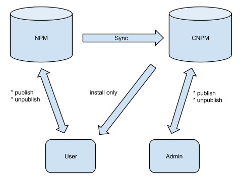

张丹(Conan), 程序员Java,R,PHP,Javascript
weibo：@Conan_Z
blog: http://blog.fens.me
email: bsspirit@gmail.com
随着Nodejs开发的项目越来越多，Node项目管理就成了一个需要思考的问题了。如果所有项目都开源统一用 NPM 进行管理也没什么问题，但总有一些是我们不希望的完全开放的代码，作为企业是核心秘密保留在公司内部，这个时候就需要在公司内网也搭建一套 NPM 依赖管理系统。
CNPM正好就提供了这个功能。从Github上CNPM的主页看，CNPM由国内Alibaba团队开发维护。
CNPM是什么？ 搭建CNPM的服务器 设置私有注册库的三种方法 CNPM的客户端使用
CNPM 是一个Nodejs的库，致力于打造私有的 NPM 注册服务。当然，除了私有库功能以外，CNPM官网 (http://cnpmjs.org/) 还提供了NPM同步的服务。
CNPM官方发布的架构图：

从CNPM的架构图中，我们可以看出CNPM是对NPM做的镜像服务，CNPM会定期同步NPM的资源库，同时CNPM支持发布私有的库，这样就非常方便地集成了公有库和私有库，对于公司内部的开发者来说，基本感觉不到两种库的区别。
另外，我们使用NPM下载依赖包时，经常性地会遇到一些包下载失败的情况，主要原因了NPM的注册服务器在国外，国内的网络环境访问国外的IP并不是太好。所以，直接配置到国内的NPM镜像，可以减少NPM下载出错机会。
比如，最近发生的NPM下载时的“No compatible version found”错误，如果不想升级NPM的环境，那么你还选择用CNPM去进行依赖管理，关于错误的详细介绍，请参考文章 NPM下载出错 No compatible version found
从官方文档中，我们看到CNPM服务器环境，只需要Node(0.11.12) + MySQL(>= 0.5.0)，另外我们还需要Linux的环境，接下来就让我们动手自己搭建一个私有NPM的服务器。
我的系统环境：
Linux: Ubuntu 12.04.2 64bit Server
Node: v0.11.2
Npm: 1.2.21
MySQL: 5.6.11 MySQL Community Server (GPL)
IP: 192.168.1.20
通过github下载项目源代码
# 下载项目，进入目录
~ git clone https://github.com/cnpm/cnpmjs.org.git
~ cd cnpmjs.org
在我们开始安装依赖包之前，先要升级NPM的版本，不然会出现“No compatible version found”的错误。
~ sudo npm install npm -g
/usr/local/bin/npm -> /usr/local/lib/node_modules/npm/bin/npm-cli.js
npm@2.0.0-beta.0 /usr/local/lib/node_modules/npm
安装项目依赖
~ sudo npm install
npm WARN engine koa-generic-session@1.1.3: wanted: {"node":">= 0.11.9"} (current: {"node":"0.11.2","np m":"2.0.0-beta.0"})
npm WARN engine koa-redis@0.1.1: wanted: {"node":">= 0.11.9"} (current: {"node":"0.11.2","npm":"2.0.0- beta.0"})
npm WARN engine koa-resource-router@0.3.3: wanted: {"node":"> 0.11.4"} (current: {"node":"0.11.2","npm ":"2.0.0-beta.0"})
npm WARN engine koa-rt@0.0.2: wanted: {"node":">= 0.11.9"} (current: {"node":"0.11.2","npm":"2.0.0-bet a.0"})
npm WARN engine koa-router@3.2.3: wanted: {"node":"> 0.11.4"} (current: {"node":"0.11.2","npm":"2.0.0- beta.0"})
npm WARN engine koa-static-cache@1.1.0: wanted: {"node":"> 0.11.4"} (current: {"node":"0.11.2","npm":" 2.0.0-beta.0"})
npm WARN deprecated lingo@0.0.5: This project is abandoned
co-read@0.1.0 node_modules/co-read
error-formater@1.0.3 node_modules/error-formater
└── utility@0.1.16 (address@0.0.3)
multiline@1.0.0 node_modules/multiline
└── strip-indent@1.0.0 (get-stdin@1.0.0)
jshint@2.5.5 node_modules/jshint
├── strip-json-comments@0.1.3
├── underscore@1.6.0
├── exit@0.1.2
├── shelljs@0.3.0
├── minimatch@0.4.0 (sigmund@1.0.0, lru-cache@2.5.0)
├── console-browserify@1.1.0 (date-now@0.1.4)
├── cli@0.6.4 (glob@3.2.11)
└── htmlparser2@3.7.3 (domelementtype@1.1.1, domutils@1.5.0, entities@1.0.0, domhandler@2.2.0, readabl e-stream@1.1.13)
koa-middlewares@1.2.0 node_modules/koa-middlewares
├── koa-conditional-get@1.0.2
├── koa-rt@0.0.2
├── koa-session@2.0.0
├── koa-etag@1.3.1 (buffer-crc32@0.2.3)
├── koa-logger@1.2.2 (passthrough-counter@0.0.1)
├── koa-compress@1.0.7 (statuses@1.0.4, koa-is-json@1.0.0, compressible@1.1.1)
├── koa-safe-jsonp@0.2.0 (jsonp-body@0.1.0)
├── koa-rewrite@1.1.0 (path-to-regexp@0.0.2)
├── koa-static-cache@1.1.0 (fs-readdir-recursive@0.0.2, compressible@1.1.1, mime-types@1.0.2)
├── koa-redis@0.1.1 (redis@0.10.3)
├── koa-router@3.2.3 (koa-compose@2.3.0, methods@1.1.0, path-to-regexp@0.2.1)
├── koa-bodyparser@1.0.1 (co-body@1.0.0)
├── koa-favicon@1.1.0 (co-fs@1.2.0)
├── koa-resource-router@0.3.3 (koa-compose@2.2.0, path-to-regexp@0.0.2, debug@0.7.4, lingo@0.0.5, defa ults@1.0.0)
├── koa-generic-session@1.1.3 (buffer-crc32@0.2.3, uid-safe@1.0.1)
├── koa-csrf@2.1.3 (csrf@2.0.1)
├── koa-ejs@1.0.1 (ejs@1.0.0, co-fs@1.2.0, is-type-of@0.2.1)
└── koa-onerror@1.0.3 (swig@1.4.2)
创建MySQL数据库，我本地的MySQL用户名为root，密码是mysql，可以通过下面语句创建。
~ mysql -uroot -pmysql -e 'DROP DATABASE IF EXISTS cnpmjs_test;' &&\
mysql -uroot -pmysql -e 'CREATE DATABASE cnpmjs_test;' &&\
mysql -uroot -pmysql 'cnpmjs_test' < docs/db.sql &&\
mysql -uroot -pmysql 'cnpmjs_test' -e 'show tables;'
+-----------------------+
| Tables_in_cnpmjs_test |
+-----------------------+
| dist_dir |
| dist_file |
| download_total |
| module |
| module_deps |
| module_keyword |
| module_log |
| module_maintainer |
| module_star |
| module_unpublished |
| tag |
| total |
| user |
+-----------------------+
接下来，我们需要在项目的./config/index.js文件中，修改MySQL数据库的用户名和密码。
~ vi ./config/index.js
108 /**
109 * mysql config
110 */
111
112 mysqlServers: [
113 {
114 host: '127.0.0.1',
115 port: 3306,
116 user: 'root',
117 password: 'mysql'
118 }
119 ],
120 mysqlDatabase: 'cnpmjs_test',
121 mysqlMaxConnections: 4,
122 mysqlQueryTimeout: 5000,
123
启动CNPM服务器
默认会打开两个端口，7001用于NPM的注册服务，7002用于Web访问。
~ node --harmony_generators dispatch.js
[Tue Sep 02 2014 15:17:54 GMT+0800 (CST)] [worker:25211:common/redis.js] Redis config can not found
[Tue Sep 02 2014 15:17:54 GMT+0800 (CST)] [worker:25211] Server started, registry server listen at 127.0.0.1:7001, web listen at 127.0.0.1:7002, cluster: false
[Tue Sep 02 2014 15:17:54 GMT+0800 (CST)] [worker:25211] mysql ready, got 13 tables
从日志中看到，这两个端口服务都绑定在127.0.0.1的本地网络中，我们需要修改配置文件 ./config/index.js文件，注释bindingHost一行，对外网开放。
~ vi ./config/index.js
39 /*
40 * server configure
41 */
42 registryPort: 7001,
43 webPort: 7002,
44 //bindingHost: '127.0.0.1', // only binding on 127.0.0.1 for local access
第二次，启动CNPM服务器
~ node --harmony_generators dispatch.js
[Tue Sep 02 2014 15:22:46 GMT+0800 (CST)] [worker:25259:common/redis.js] Redis config can not found
[Tue Sep 02 2014 15:22:46 GMT+0800 (CST)] [worker:25259] Server started, registry server listen at undefined:7001, web listen at undefined:7002, cluster: false
[Tue Sep 02 2014 15:22:46 GMT+0800 (CST)] [worker:25259] mysql ready, got 13 tables
通过浏览器访问：http://192.168.1.20:7002 ，没想到的情况，应用又崩溃了，这个坑深入了！！
[Tue Sep 02 2014 15:29:00 GMT+0800 (CST)] [worker:25404] Server started, registry server listen at undefined:7001, web listen at undefined:7002, cluster: false
[Tue Sep 02 2014 15:29:00 GMT+0800 (CST)] [worker:25404] mysql ready, got 13 tables
==== JS stack trace =========================================
2: arguments adaptor frame: 0->1
Security context: 0x185dd4b5e291 <JS Object>#0#
4: /* anonymous */ [/home/conan/nodejs/cnpmjs.org/node_modules/co/index.js:40] (this=0x2a1e646d07e1 <an Object>#1#,done=0x2d36f5fcdd31 <JS Function>#2#)
5: /* anonymous */ [/home/conan/nodejs/cnpmjs.org/node_modules/koa/lib/application.js:125] (this=0x2d36f5fab301 <a Server>#3#,req=0x2d36f5fcacc1 <an IncomingMessage>#4#,res=0x2d36f5fcc3f9 <a ServerResponse>#5#)
6: emit [events.js:100] (this=0x2d36f5fab301 <a Server>#3#,type=0x8305a126379 <String[7]: request>)
7: arguments adaptor frame: 3->1
8: onIncoming [_http_server.js:450] (this=0x2d36f5fc8029 <an HTTPParser>#6#,req=0x2d36f5fcacc1 <an IncomingMessage>#4#,shouldKeepAlive=0x185dd4b04161 <true>)
//省略日志
经过检查发现，是Node版本的问题。重新下载编译安装Node，详细操作请参考文章准备Nodejs开发环境Ubuntu，升级后的版本为
Node v0.13.0-pre
NPM 1.4.21
第三次，启动CNPM服务
~ node --harmony_generators dispatch.js
[Tue Sep 02 2014 16:00:25 GMT+0800 (CST)] [worker:14842:common/redis.js] Redis config can not found
[Tue Sep 02 2014 16:00:25 GMT+0800 (CST)] [worker:14842] Server started, registry server listen at undefined:7001, web listen at undefined:7002, cluster: false
[Tue Sep 02 2014 16:00:25 GMT+0800 (CST)] [worker:14842] mysql ready, got 13 tables
通过浏览器访问，CNPM服务：http://192.168.1.20:7002
终于正常了，这样就成功搭建了私有的NPM注册服务。
搜索一下，我之前在NPM发布的自己的包ape-algorithm，发现没有结果，根据界面提示CNPM应用会自动去NPM上同步。
第一次同步操作，会下载很多的包，大家要耐心等待啊。页面不能切换！
我们自己搭建的私有服务怎么用呢？
我们先建一个项目目录
~ /home/conan/nodejs
~ mkdir nodejs-cnpm && cd nodejs-cnpm
3.1 下载指定私有库
一种简单的方式就是，下载的时候指定我们自己的私有库，这样就会从我们自己的私有库中下载。如果私有库没有对应的库，CNPM会自动同步到NPM 找到我们要下载的库和版本，先在CNPM中存一份，然后再传给客户端一份，运行原理和Maven的原理一样。
执行下载的操作
~ npm install ape-algorithm --registry=http://192.168.1.20:7001
ape-algorithm@0.0.8 node_modules/ape-algorithm
└── linklist@0.0.3
# 查看下载的库
~ ls -l
drwxrwxr-x 3 conan conan 4096 9月 2 16:36 node_modules
3.2 给项目设置私有库
如果这个项目所有依赖库都从公司内网下载，那么我们可以给整个项目设置私有库，就不需要每次下载的时候单独指定了。
首先，我们查看项目的默设置，通过npm config list命令。
~ npm config list
; cli configs
registry = "https://registry.npmjs.org/"
user-agent = "npm/1.4.21 node/v0.13.0-pre linux x64"
; node bin location = /usr/local/bin/node
; cwd = /home/conan/nodejs/nodejs-cnpm
; HOME = /home/conan
; 'npm config ls -l' to show all defaults.
registry属性是指向NPM的官司位置https://registry.npmjs.org/，我们可以通过npm config set registry命令来修改这个配置。
~ npm config set registry http://192.168.1.20:7001
# 再次查看项目设置
~ npm config list
; cli configs
registry = "http://192.168.1.20:7001/"
user-agent = "npm/1.4.21 node/v0.13.0-pre linux x64"
; userconfig /home/conan/.npmrc
registry = "http://192.168.1.20:7001/"
; node bin location = /usr/local/bin/node
; cwd = /home/conan/nodejs/nodejs-cnpm
; HOME = /home/conan
这个项目再下载新包时，就会通过我们私有库去下载。
3.3 给用户设置私有库
如果我们的开发环境在内网，不允许访问外网，那么我们可以设置全局的NPM库。
在当前用户所在的根目录，找到.npmrc文件，配置NPM私有库。
~ vi ~/.npmrc
registry=http://192.168.1.20:7001 设置成功后，当前用户的所有NPM下载都会通过私有库来完成。
3.4 设置淘宝的开放库
我们除了使用自己的私有库，还可以使用淘宝的NPM库，这样可以有效地避免国内访问国外NPM库，网络不通的问题。
按照上面的方法，把registry配置为https://registry.npm.taobao.org 就行了。
registry = "https://registry.npm.taobao.org/"
CNPM 不仅提供服务端的功能，还提供了客户端的访问功能，就像NPM一样。通过全局安装cnpm包，可以完全取代了npm的命令操作了。
安装cnpm客户端
~ sudo npm install -g cnpm
/usr/local/bin/cnpm -> /usr/local/lib/node_modules/cnpm/bin/cnpm
/usr/local/bin/cnpm-sync -> /usr/local/lib/node_modules/cnpm/bin/cnpm-sync
/usr/local/bin/cnpm-check -> /usr/local/lib/node_modules/cnpm/bin/cnpm-check
/usr/local/bin/cnpm-web -> /usr/local/lib/node_modules/cnpm/bin/cnpm-web
/usr/local/bin/cnpm-user -> /usr/local/lib/node_modules/cnpm/bin/cnpm-user
/usr/local/bin/cnpm-doc -> /usr/local/lib/node_modules/cnpm/bin/cnpm-doc
/usr/local/bin/cnpm-search -> /usr/local/lib/node_modules/cnpm/bin/cnpm-search
cnpm@1.0.0 /usr/local/lib/node_modules/cnpm
├── commander@2.3.0
├── auto-correct@1.0.0
├── giturl@0.0.3
├── cross-spawn@0.1.7
├── colors@0.6.2
├── bagpipe@0.3.5
├── open@0.0.5
├── debug@1.0.4 (ms@0.6.2)
├── npm-request@0.0.4 (urllib@0.5.11)
├── npm@2.0.0-beta.2
└── urllib@0.5.17 (default-user-agent@0.0.1, debug@0.8.1, digest-header@0.0.1)
测试通过cnpm安装gulp包
~ cnpm install gulp
> node-v8-clone@0.6.2 install /home/conan/nodejs/nodejs-cnpm/node_modules/gulp/node_modules/gulp-util/node_modules/vinyl/node_modules/node-v8-clone
> node-gyp rebuild
gulp@3.8.7 node_modules/gulp
├── tildify@0.2.0
├── interpret@0.3.2
├── pretty-hrtime@0.2.0
├── deprecated@0.0.1
├── archy@0.0.2
├── minimist@0.2.0
├── semver@3.0.1
├── chalk@0.5.0 (escape-string-regexp@1.0.1, ansi-styles@1.1.0, supports-color@0.2.0, has-ansi@0.1.0, strip-ansi@0.3.0)
├── orchestrator@0.3.0 (sequencify@0.0.7, events@1.0.2, execify@0.0.3)
├── liftoff@0.12.0 (extend@1.2.1, minimist@0.1.0, resolve@0.7.4, findup-sync@0.1.3)
├── gulp-util@3.0.1 (lodash._reinterpolate@2.4.1, dateformat@1.0.8-1.2.3, minimist@1.1.0, multipipe@0.1.0, lodash.template@2.4.1, through2@0.6.1, lodash@2.4.1, vinyl@0.4.0)
└── vinyl-fs@0.3.0 (map-stream@0.1.0, graceful-fs@3.0.2, lodash.defaults@2.4.1, mkdirp@0.5.0, through2@0.5.1, strip-bom@0.3.0, through2-map@1.4.0, glob-watcher@0.0.6, glob-stream@3.1.15, vinyl@0.2.0)
效果同NPM一样，gulp包被成功安装。
当我们要发布包到NPM的时候，由于CNPM默认同步时间差是30分钟，如果想马上同步，需要手动输入同步的命令。
同步gulp包
~ cnpm sync gulp
Start sync ["gulp"].
sync gulp, PUT http://r.cnpmjs.org/gulp/sync?publish=false&nodeps=false
logurl: http://cnpmjs.org/sync/gulp#logid=10798
[2014-09-02 05:18:09] user: anonymous, sync gulp worker start, 1 concurrency, nodeps: false, publish: false
[2014-09-02 05:18:09] [c#0] [gulp] pkg status: 200, start...
[2014-09-02 05:18:09] [gulp] found 15 missing star users
[2014-09-02 05:18:09] [gulp] all versions are exists
[2014-09-02 05:18:09] [gulp] no versions need to deleted
[2014-09-02 05:18:09] [gulp] saving 15 star users
[2014-09-02 05:18:09] [gulp] saving 3/187 missing npm users: ["mittya","160mph","vivainio"]
[2014-09-02 05:18:09] [c#0] [gulp] synced success, 0 versions:
[2014-09-02 05:18:09] [c#0] setImmediate after, gulp done, start next...
[2014-09-02 05:18:09] [done] Sync gulp module finished, 1 success, 0 fail
Success: [ gulp ]
Fail: [ ]
sync gulp, PUT https://registry.npm.taobao.org/gulp/sync?publish=false&nodeps=false
logurl: https://npm.taobao.org/sync/gulp#logid=8354
[2014-09-02 17:18:13] user: anonymous, sync gulp worker start, 1 concurrency, nodeps: false, publish: false
[2014-09-02 17:18:14] [c#0] [gulp] pkg status: 200, start...
[2014-09-02 17:18:14] [gulp] found 15 missing star users
[2014-09-02 17:18:14] [gulp] all versions are exists
[2014-09-02 17:18:14] [gulp] saving 15 star users
[2014-09-02 17:18:14] [gulp] no versions need to deleted
[2014-09-02 17:18:15] [gulp] saving 3/188 missing npm users: ["mittya","160mph","vivainio"]
[2014-09-02 17:18:15] [c#0] setImmediate after, gulp done, start next...
[2014-09-02 17:18:15] [c#0] [gulp] synced success, 0 versions:
[2014-09-02 17:18:15] [done] Sync gulp module finished, 1 success, 0 fail
Success: [ gulp ]
Fail: [ ]
Sync all packages done, successed: ["gulp"], failed: []
这样我们就完全地把CNPM私有库在公司内部用起来了。把包管理的问题解决了，让程序员可以踏踏实实地写代码才是最重要的！！
Note :
- npm adduser admin 然后设置邮件为config里的admin邮件即可
- 如何将自己的包上传到私有库? http://cnpmjs.org/ $ cnpm publish [name]
- 我看官方说只有admin用户才能发布,怎么登录admin后发布?admin密码在哪里可以看? 直接给官方邮箱发信问吧。 整个项目都是开源的，第一可以去问，第二也可以看代码。
- 不支持搭建在windows下吗?
- 私有化仓库才是企业应用的第一步。